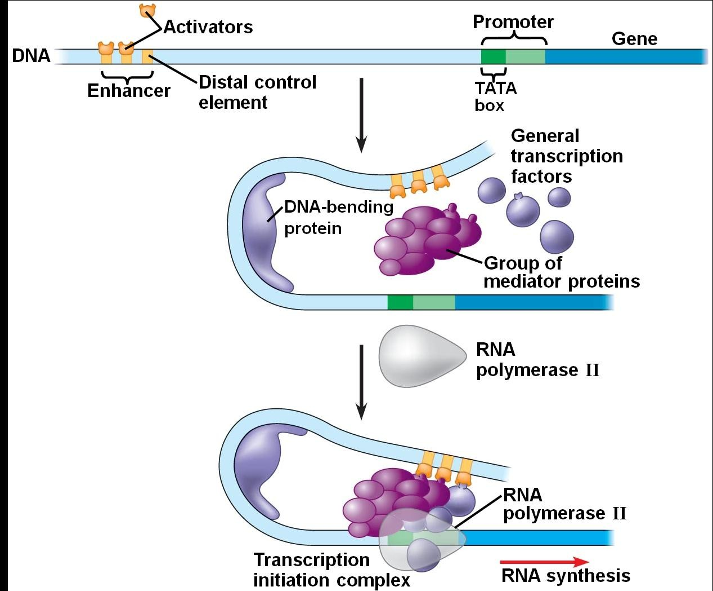

BIO103 · 第 12 章
基因表达调控
Control of Gene Expression
虚线下划线为术语；悬停查看中文、英文与释义，完整词典见“术语”。
本章目录
本讲分两部分：先讲原核的负调控与正调控，以 trp 操纵子、lac 操纵子与 CRP–cAMP 为例；再讲真核的五个调控层次，重点是染色质修饰、转录因子与非编码 RNA。
本章要点
- 所有细胞都含完整 DNA 补体，但并非所有基因都表达；管家基因在各组织持续表达。
- 基因表达可在五个层次被调控：染色质重塑、转录、转录后、翻译、翻译后；多数调控发生在转录起始。
- 操纵子是一组由同一启动子转录、产生多顺反子 mRNA 的基因；操作子是阻遏/激活蛋白结合的位置。
- trp 操纵子是可阻遏操纵子：通常开启，色氨酸作为辅阻遏物使阻遏蛋白活化而关闭转录。
- lac 操纵子是可诱导操纵子：通常关闭，异乳糖作为诱导物使阻遏蛋白失活而开启转录。
- 葡萄糖缺乏时 cAMP 升高，CRP–cAMP 结合启动子促进转录，构成正调控（分解代谢物阻遏）。
- 真核通过组蛋白乙酰化、DNA 甲基化等染色质修饰与转录因子、可变剪接、非编码 RNA 多层调控。
12.1 基因表达与管家基因
基因表达gene expression是基因中的信息被用于合成功能性基因产物的过程，路径为 DNA → mRNA → 蛋白质。几乎所有细胞都含有完整的 DNA 补体，但并非所有基因都在表达。
在各组织中都持续表达的基因称为管家基因housekeeping genes，它们组成型表达（constitutively expressed），例如编码 actin 与 tubulin 的基因。其余基因的表达是组织依赖性tissue-dependent的：同一套基因组在不同细胞中读出不同的子集，才产生不同的细胞类型与功能。
这一事实是理解整个调控章节的起点：调控不是“有没有基因”，而是“在哪个细胞、哪个时间、表达多少”。
L14–15 p.3–4
12.2 基因表达的五个调控层次
原核与真核都能调控基因表达，且调控可发生在信息流的多个节点。讲义把它们归纳为五个层次：
- 染色质重塑（chromatin rearrangement）：改变染色质构象与 DNA 对转录机器的可及性。
- 转录调控（transcriptional control）：调控 RNA 聚合酶与启动子的结合及转录起始。多数基因调控发生在此层。
- 转录后调控（post-transcriptional control）：调控 RNA 转录后的加工、运输与稳定性。
- 翻译调控（translational control）：调控翻译的起始与延伸。
- 翻译后调控（post-translational control）：调控蛋白质合成后的修饰、折叠、定位与降解。
层次越靠前，调控越“经济”：在转录前关闭一个基因，比先合成 mRNA 再阻止翻译节省能量。这也是转录起始成为主要控制点的原因。
L14–15 p.5, p.28, p.47
12.3 启动子、操纵子与操作子
原核调控的三个核心元件必须分清：
- 启动子promoter：RNA 聚合酶开始转录的一段短 DNA 区域，通常紧邻转录起始位点上游。
- 操纵子operon：由同一启动子转录的一组基因，产生一条携带多个编码序列的多顺反子 mRNApolycistronic mRNA。
- 操作子operator：紧邻细菌操纵子启动子的一小段 DNA，结合阻遏蛋白或激活蛋白，控制该操纵子的转录速率。
三者关系可以这样理解：启动子是“开关的位置”，操作子是“开关的手柄”，操纵子是“被开关控制的一组灯”。一个操纵子只用一个启动子，因此这组基因总是被一起转录、一起关闭。
L14–15 p.6
12.4 trp 操纵子：可阻遏的负调控
E. coli 从一种前体分子经三步反应合成色氨酸，每一步由一种酶催化；编码这些酶亚基的五个基因聚在一起，共用一个启动子，构成一个转录单位。当环境中缺少色氨酸时，细胞必须自己合成，五个酶的基因便同时表达。
这个操纵子的开关是一段称为操作子的 DNA。trp 操纵子属于可阻遏操纵子repressible operon：通常处于开启状态，以低速率持续合成色氨酸；当色氨酸充足时被抑制。
调控的逻辑是“阻遏蛋白默认失活”：
- 色氨酸低时：阻遏蛋白以无活性形式存在，对 trp 操作子亲和力很低，不结合；RNA 聚合酶可结合启动子并转录整个操纵子。
- 色氨酸高时：色氨酸与阻遏蛋白的别构位点结合，使其变为有活性的构象，结合到操作子上，操纵子关闭。
阻遏蛋白由调控基因 trpR 编码。trpR 位于 trp 操纵子之外的一段距离，拥有自己的启动子，因此它的表达不受 trp 操纵子控制。这种“调节基因独立、阻遏蛋白靠小分子变构”的设计，使细胞能对色氨酸浓度作出快速反应。
除转录阻遏外，色氨酸充足时还会抑制通路中第一个酶的活性，称为反馈抑制（feedback inhibition），这是更快的短期响应；转录阻遏则是较长期的响应。两者配合，避免浪费前体与能量。讲义在 trp 操纵子的示意图中还标注了 trp 衰减子trp attenuator，但正文未展开其机制，此处只作位置提示，详细调控留待课程补充。

Clean vector diagram of the trp operon in two states: upper panel low tryptophan with the inactive repressor unable to bind the operator, RNA polymerase transcribing the five structural genes; lower panel high tryptophan with tryptophan bound to the repressor at an allosteric site, the active repressor bound to the operator, and RNA polymerase blocked. Labels for promoter, operator, the five structural genes and the trpR gene. Flat 2D, thin 1.5 px strokes, muted slate blue and warm grey palette, white background, English labels, no cartoon, no gradient, no shadow.
L14–15 p.7–12
12.5 lac 操纵子：可诱导的负调控
lac 操纵子编码三个参与乳糖代谢的蛋白：
| 基因 | 蛋白 | 功能 |
|---|---|---|
| lacZ | β-半乳糖苷酶 | 把乳糖切成葡萄糖与半乳糖 |
| lacY | β-半乳糖苷渗透酶 | 膜上的运输蛋白，把乳糖泵入细胞 |
| lacA | β-半乳糖苷转乙酰酶 | 把乙酰基从乙酰-CoA 转移到 β-半乳糖苷 |
lac 操纵子属于可诱导操纵子inducible operon：通常关闭，只有在特定小分子存在时才被开启。诱导物不是乳糖本身，而是异乳糖allolactose——乳糖进入细胞后由少量转化生成的一种异构体。
调控逻辑与 trp 相反，是“阻遏蛋白默认有活性”：没有乳糖时，阻遏蛋白结合在操作子上，RNA 聚合酶无法转录；乳糖存在时，异乳糖结合阻遏蛋白使其构象改变、从操作子上脱落，聚合酶得以转录 lacZ、lacY、lacA。
但乳糖存在并不足以让细胞大量使用乳糖。若葡萄糖与乳糖同时存在，E. coli 优先利用葡萄糖；只有当乳糖存在且葡萄糖不足时，才切换到乳糖作为能源。这一层选择由下一节的正调控完成。

Clean vector diagram of the lac operon in two states: upper panel no lactose with the active repressor bound to the operator blocking RNA polymerase; lower panel lactose present with allolactose bound to the repressor, the repressor released from the operator, and RNA polymerase transcribing lacZ, lacY and lacA. Labels for promoter, operator, lacI repressor gene and the three structural genes. Flat 2D, thin 1.5 px strokes, muted slate blue and warm grey palette, white background, English labels, no cartoon, no gradient, no shadow.
L14–15 p.13–17
12.6 葡萄糖效应与 CRP–cAMP 正调控
细胞如何感知葡萄糖浓度并把信息传给 lac 操纵子？机制仍然是一个别构调节蛋白与一个小分子配体的相互作用，这个小分子是环腺苷酸cyclic AMP (cAMP)，在葡萄糖缺乏时积累。
受体蛋白称为 cAMP 受体蛋白cAMP receptor protein (CRP)，也称分解代谢物激活蛋白（CAP）。它是一种激活蛋白：结合 DNA 后刺激基因转录。
- 乳糖存在、葡萄糖缺乏：cAMP 水平高 → CRP 与 cAMP 结合后被激活 → 结合到 lac 启动子 → 增加 RNA 聚合酶在该处的结合 → 大量 lac mRNA 合成。
- 乳糖存在、葡萄糖也存在：cAMP 水平低 → CRP 无法有效刺激转录；即使操作子上没有阻遏蛋白，lac mRNA 也只少量合成。
这就是分解代谢物阻遏catabolite repression：葡萄糖的存在间接抑制了其他碳源利用基因的表达。它属于正调控，因为 CRP 的作用是“促进”而非“阻止”。
宏观表现是两段生长：E. coli 在葡萄糖与乳糖混合培养基中先利用葡萄糖快速生长，葡萄糖耗尽后生长短暂停滞（滞后期，lag phase），此时细胞合成新的酶，随后以乳糖为碳源进入第二段生长。
L14–15 p.18–23
12.7 可诱导与可阻遏的系统对照
两个操纵子的逻辑可以并列记忆：
| 维度 | trp 操纵子 | lac 操纵子 |
|---|---|---|
| 类型 | 可阻遏（repressible） | 可诱导（inducible） |
| 默认状态 | 通常开启 | 通常关闭 |
| 小分子角色 | 色氨酸：辅阻遏物 | 异乳糖：诱导物 |
| 阻遏蛋白 | 默认无活性，结合色氨酸后活化 | 默认有活性，结合异乳糖后失活 |
| 通路类型 | 合成代谢（anabolic） | 分解代谢（catabolic） |
讲义据此给出一般规律：可诱导酶通常作用于分解代谢通路，其合成由化学信号诱导；可阻遏酶通常作用于合成代谢通路，其合成被终产物高水平所阻遏。两者的调控都是负调控，因为操纵子都是被阻遏蛋白的活性形式关闭的。
这一规律也有例外，但讲义只要求掌握这两个经典例子。答题时若问“为什么 trp 是可阻遏而 lac 是可诱导”，应从“细胞何时需要该通路”回答：色氨酸是产物，产物充足时应关闭合成；乳糖是底物，底物出现时才需要降解它的酶。
L14–15 p.24–26
12.8 染色质修饰与表观遗传
真核的第一个调控层次是染色质。DNA 与组蛋白组成核小体，紧密包装的异染色质heterochromatin中的基因通常不表达，较疏松的常染色质euchromatin则允许转录。组蛋白的化学修饰与 DNA 甲基化都能改变染色质结构，从而影响基因表达。
核心机制是电荷：组蛋白尾部富含带正电的赖氨酸，与带负电的 DNA 相互吸引，使染色质压缩。乙酰化把乙酰基加到这些赖氨酸上，中和正电荷，削弱组蛋白与 DNA 的吸引，染色质变得疏松，转录起始得以进行。去乙酰化则恢复正电荷，染色质重新压缩，DNA 不可转录。
甲基化与磷酸化的作用更依赖具体位点：加甲基可改变染色质状态（取决于具体的组蛋白修饰）；在已甲基化的氨基酸旁再加磷酸基，也能使染色质疏松。这些修饰共同影响染色质结构与基因表达，并且可以被逆转。
这类不改变核苷酸序列、却可遗传给子代细胞的性状传递称为表观遗传epigenetic inheritance。关键区别是：DNA 突变是永久改变，而染色质修饰可以被逆转——这使细胞能够根据信号灵活开关基因，而不必改动基因组。
Clean vector diagram comparing two chromatin states: left, unacetylated histone tails with positive lysines attracting DNA, nucleosomes tightly packed and RNA polymerase excluded; right, acetylated histone tails with acetyl groups on lysines, chromatin loosened and RNA polymerase bound to a promoter. Flat 2D, thin 1.5 px strokes, muted slate blue and warm grey palette, white background, English labels, no cartoon, no gradient, no shadow.
L14–15 p.29–33
12.9 转录因子、增强子与可变剪接
第二个层次是转录起始的调控，依靠特异性转录因子。精确的基因表达很大程度上取决于特异性转录因子与调控元件的结合；这类因子在正确的时间与位置，使特定基因达到高水平转录。
激活蛋白activator结合增强子并刺激该基因转录；另一些转录因子作为阻遏蛋白（repressor），抑制特定基因的表达。增强子与沉默子可以位于远离启动子的位置，却仍能影响该基因的转录速率。
第三个层次是转录后调控。可变剪接alternative RNA splicing使同一个初级转录本产生不同的 mRNA，取决于哪些区段被当作外显子、哪些被当作内含子。讲义以肌钙蛋白 T（troponin T）基因为例：不同的剪接组合产生不同的 mRNA，翻译成不同但相关的蛋白。这样，一个基因就能编码多种产物，显著扩展了基因组的编码能力。

L14–15 p.35–38
12.10 非编码 RNA 与翻译、翻译后调控
非编码 RNA 在多个层次参与调控。讲义列出六类：rRNA 是核糖体的必需组分；mRNA 携带基因产物的编码信息并结合核糖体；tRNA 被特定氨基酸“充载”，通过反密码子与密码子的配对把氨基酸送到核糖体；snRNA 参与 pre-mRNA 剪接；snoRNA 参与 rRNA 加工；miRNA 参与转录后调控，与靶 mRNA 互补配对，通常引起基因沉默。
siRNA 与 miRNA 的差别要按讲义的三条特征记：siRNA 由长双链 RNA 前体产生，序列不保守，与 mRNA 完全配对，导致 mRNA 切割并阻止翻译；miRNA 与 mRNA 多为不完全配对——若全长完全互补则 mRNA 被降解，若配对不完整则翻译被阻断。双链 RNA 之所以“危险”，正是因为它可被加工成 siRNA、miRNA 或 shRNA，造成 mRNA 切割与翻译中止。
第四、第五个层次发生在细胞质。翻译效率可被调控；mRNA 可被降解，从而决定其半衰期与蛋白产量。翻译出的多肽需经蛋白质加工protein processing才能成为活性蛋白，随后被运往目的地执行功能；蛋白质最终也可被降解。
翻译后调控的典型方式是磷酸化与降解。磷酸化可快速、可逆地改变酶活性；蛋白质降解则由蛋白酶体proteasome执行，清除不再需要或已受损的蛋白。这样，细胞不仅能决定“造多少”，也能决定“留多久”。
L14–15 p.40–47